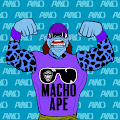 Ape World Order 猿世界秩序 AWO，5000 个职业摔跤猿，由 1000 个资产组合而成。 每个 AWO NFT 有 8 个属性，按 0-100 等级评分。 即将推出多边形，薄荷 AWO 与$PIZZA 为 AWO 设计原
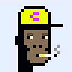 ApePunks Co. 猿强。猿一起。薄荷https://ApePunks.co 猿朋克我们很强大，3000只猿来了！ 为什么是猿？ 我们喜欢最初的 CryptoPunks 系列，但我们一直认为
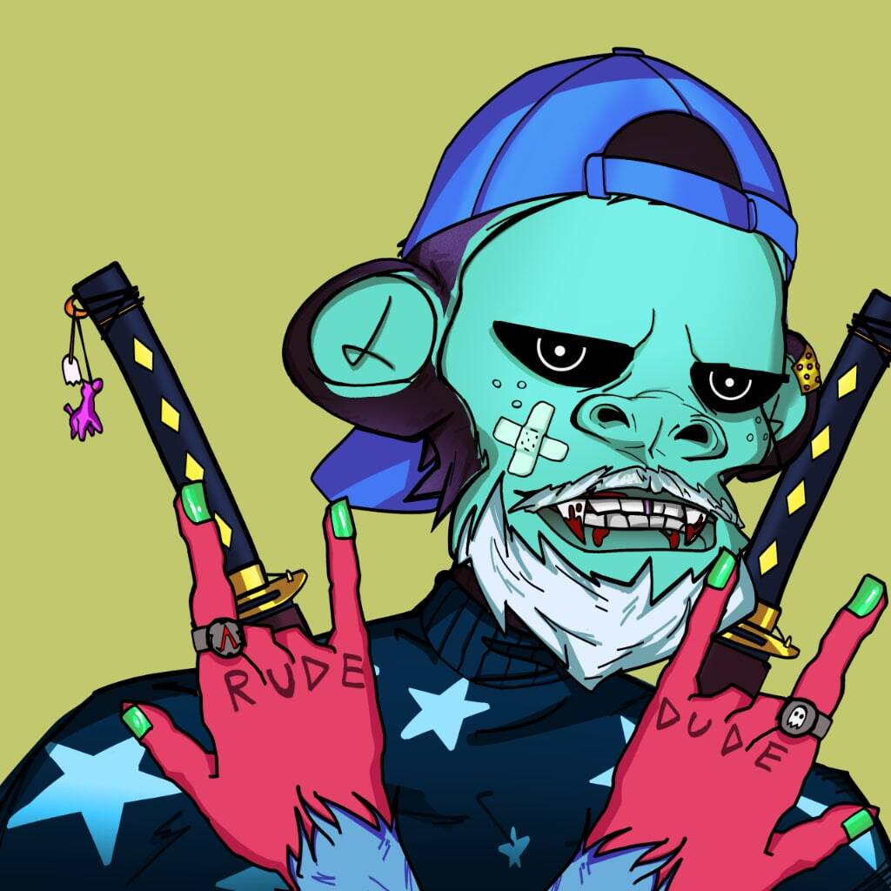 AperiansClub Aperians Club 是大型 Web3 生态系统的一部分。一个社区项目，致力于为 web3 空间中的投资者、艺术家和创作者提供更安全的环境。 ▶ 什么是 AperiansClub？ AperiansClub 是
ApeRunners 谁能比 Apes 更好地运行 NFT？！Apes 一直征服 Bear 和 Bull。NFT 一直是 Apes 的王国。现在猿人又回到了 赛跑者比赛。 ▶ 什么是 ApeRunners？ ApeRunners
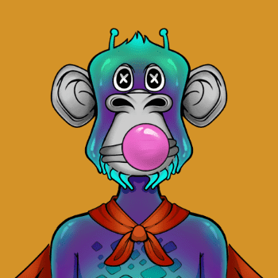 Apes FTW 过去 7 天没有出售 Apes FTW。 公共造币厂现在也开始了。对于那些已经铸造的人，您可以使用不同的元掩码钱包来铸造您的额外猿。 ▶ 什么是猿 FTW？ Apes FTW 是
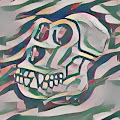 ArtApe(eth) 4,444 cc0 Artblock Apes，在 7 条不同的链上铸造，并可在每条链之间转移。所有的artapes都将成为我们下一个跨链游戏的通行证。ArtApe(eth) NFT
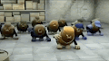 AYE DATS FR CRAZY HOE 没有推特，没有不和谐，没有路线图，只是： AYE DATS FR CRAZY HOE 现在给我看一个问过的人▶ 什么是 AYE DATS FR CRAZY HOE？这正是我们的态度，我们只做自己。 AYE DATS FR CRAZY HOE 是
AyrabMoney NFT 中东出现 5,555 个独特的阿拉伯主题 NFTS 将于 12 月 17 日下午 5:55 GST 下降。再见啦哈比比▶ 什么是 AyrabMoney NFT？ AyrabMoney NFT 是一个 NFT（替代币）集合。存储在区块链上的数字收
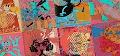 Azar by Ger & MendezMendez AZAR，mxtter genesis 系列，灵感来自丝网印刷的“测试印刷品”。丝网印刷是一种颜色，一次一层。通常，艺术家或打印机在开始打印之前测试每一层，
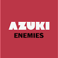 AzokiEnemies 欢迎来到 OpenSea 上的 AzokiEnemies 之家。发现这个系列中最好的项目。 AzokiEnemies 拥有 10,000 个 Azoki NFT 集合，每个 Azoki NFT 都是 100% 全新且独特的设计。AzokiEnemies 不隶属于 AZUKI TEA
Azukevin Official 555 Kevins 但在 AzukiMINT LIVE 在以 0.005ETH150$ 赢得每个 Azukevin 绿票，抓住机会！Azukevin 官方 NFT - 常见问题（FAQ） ▶ 什么是 Azukevin 上市？ 过去 7 天内没有出售 Azukevin Official。
Azuki Apes 拿了红豆进化成 Azuki Apes 🐒⚔️1500 个头像准备征服元界⚔️加入社区购买驯服你的猿.. 🙈Azuki Apes NFT - 常见问题（FAQ） ▶ 什么是小红人猿？ Azuki Apes 是
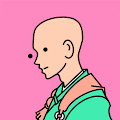 Azuki Doodles 5000 个 Azuki 涂鸦等着你。灵感来自红极一时的 Azuki 和 Doodles 合集。发现最好的物品。Azuki Doodles NFT - 常见问题（FAQ）小豆涂鸦每天都有灵感他的灵感来自于其他艺术
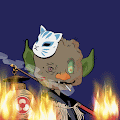 Azuki Goblin Aaaaaaaauuuuuggghhhhh 妖精醒来 ou el 发现 azuki el 偷了他们的布丁 dur tam goblintown，看起来很阳光？好的，再见Azuki Goblin NFT - 常见问题（FAQ）过去 7 天内没有出售小
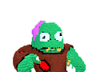 Azuki Kevin 555 Kevin but Azuki Flipped免费薄荷糖在 5 分钟内售罄Kevin is the world凯文是世界Azuki Kevin NFT - 常见问题（FAQ）第555章 凯文却小豆翻了 过
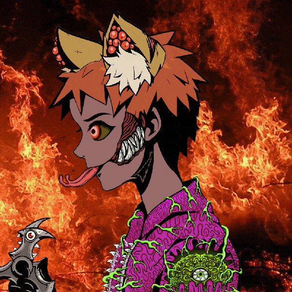 Azuki Never Die Mint Now@ https://azukiverdie.com Twitter: https://twitter.com/AzukiNeverDie 8888 享有盛誉的 Azuki Never Die NFT 是一个私人会员社区，将提供 Azuki 和 MAYC 内的投资信息和洞察力第一个 2000 Azuki Never Die NFT 免费 你的 Azuki Never Die 等着你First 2000 Azuki Never Die NFT Free
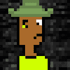 Azuki Punk 在 OpenSea 上创建的第一个 azuki punkAzuki Punk NFT - 常见问题（FAQ） ▶ 什么是红豆朋克？ Azuki Punk 是一个 NFT（不可替代代币）集合。存储在区块链上的数字收藏品集合。 ▶ 有多
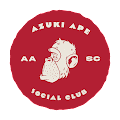 AzukiApeSocialClub Azuki Ape 社交俱乐部是一个独家社交俱乐部，会员可以通过持有 Azuki Ape 来获得访问权限。现存的只有 3,333 只 Azuki Apes，每只都允许会员进入一个社会俱乐部，该俱乐部
AzukiPotatoes 有它德根AzukiPotatoes NFT - 问题常见（FAQ） ▶ 什么是小红薯？ AzukiPotatoes 是一个 NFT（非同质代币）集合。存储在区块链上的数字收藏品集合。 ▶
AzukiPunks 以太坊区块链上的 4500 个免费 AzukiPunks。现在不隶属于 TeamAzuki 或 LarvaLabs.Mint： NFT - 常见问题（FAQ） ▶ 什么是 AzukiPunk
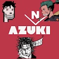 Azunki 我会铺地毯。Azunki NFT - 常见问题（FAQ） ▶ 什么是阿祖基？ Azunki 是 NFT（替代代币）集合。在区块链上存储一个不可收藏的收藏品。 ▶ 存在多少个 Azunki
B-ball Pandas B-ball Pandas 是一个 NFT 集合，由 10,000 只篮球熊猫在区块链中争夺霸主地位。每个 Panda 都是独一无二的，通过组合 100 多个特征通过算法生成。每个 B-ball Pandas 都被分配了篮球技能，可
B.Duck x Madworld B.Duck x Madworld MADworld 为您带来的系列，在浴缸之外的生活中偷偷摸摸！成为 Founding Feathers 的一员，B.Ducks 正在离开浴缸！ MADworld X B.Duck NFT - 常见问题（FAQ） ▶ 什么是 MADworld X B.Duc
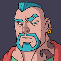 Baba Universe 巴巴宇宙中的 2,222 位巴巴：第 1 版遇见 Turhan 和 TyroneBaba Universe NFT - 常见问题（FAQ） ▶ 什么是巴宇宙？ Baba Universe 是 NFT（替代代币）集合。存储在区块链上的数字收藏品不可收
Babies of Gods^ babyofgodd NFT - 常见问题（FAQ） ▶ 什么是上帝的宝贝？ babyofgodd 是一个 NFT（非同质代币）集合。存储在区块链上的数字收藏品集合。 ▶ 有多少个babyofgodd
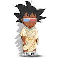 Babies Of Godsz 🔱 10,000 个众神宝宝联合起来🔱 🌌 银河系最佳 NFT 合集babyofgodd NFT - 常见问题（FAQ） ▶ 什么是上帝的宝贝？ babyofgodd 是一个 NFT（非同质代币）集合。存
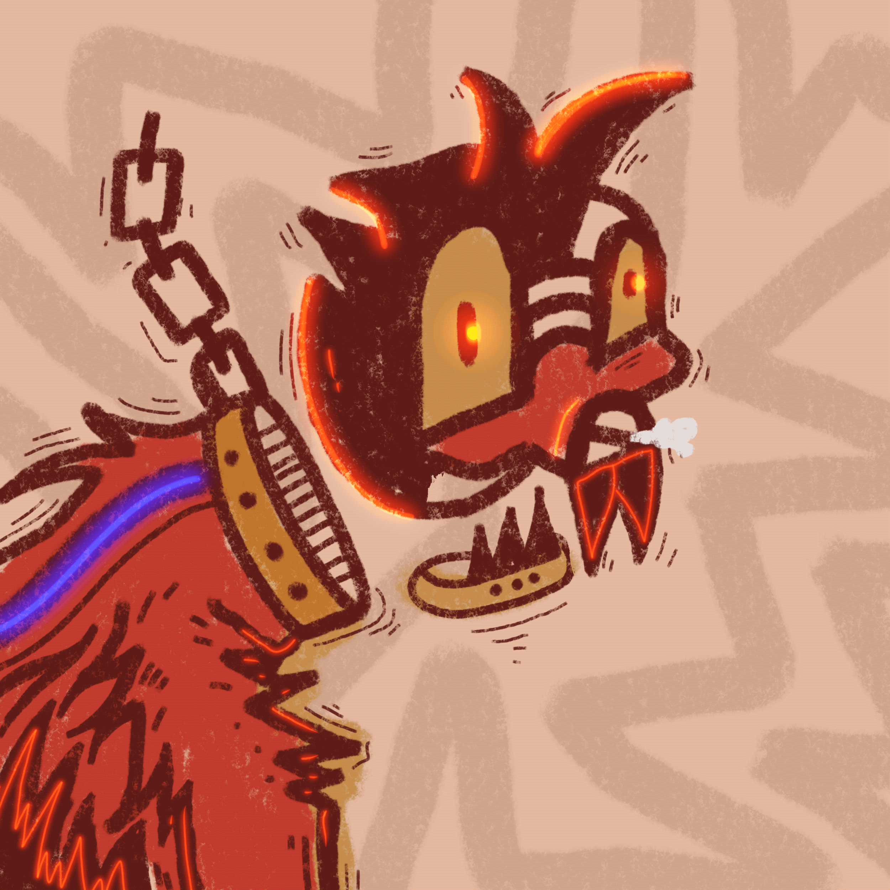 BABLA STUFF ED. monsta m，炽热的火焰，勇敢的风格怪物的象征，快速移动BABLA STUFF ED。NFT - 常见问题（FAQ） ▶ 什么是 BABLA STUFF ED.？ BABLA STUFF ED。是一个 NFT（替代
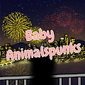 Baby Animals Punks 欢迎来到可爱的动物朋友社区！孩子可以是任何东西，他们是下一代的希望。 AP CREW 将这些想法融入了 AP 世界观。 ▶Animals Punks是一个基于ETH
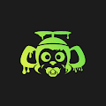 Baby Ape Mutant Club by BABC Baby Ape Mutant Club 是以太坊区块链上的下一系列独特 NFT。这个原始的 Baby Mutant 集合包含 3333 个 NFT！ Baby Ape 的想法首先来自于修改我自己的 MAYC 的特征，同时获得其他 MAYC 所有
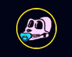 Baby Ape Polygon Club 猿人很无聊，想到了一个绝妙的主意。花了几个月的时间，但现在他们有了孩子。请加入我们，欢迎 Lil Baby Ape 加入俱乐部。这是 Kakashi 真正原创的 Lil Baby Ape 俱乐部。Tw
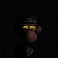 Baby Ape Prime Evolution B.A.P.E.S NFT 是一个 8K 分辨率 3D 完全渲染集合，包含 8,888 只猿猴的 Prime Evolution 准备转变为 Meta B.A.P.E.S 并进入令人兴奋的 Metaverse 新世界。该集合是随机生成和精心策划的，每个 B.A.P.E 都是独一无二
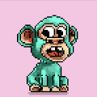 Baby Ape Px Club Baby Ape Pixel 俱乐部由 563 只独特的可爱猿组成，它们已被遗弃在像素丛林中，需要有人照顾它们。Baby Ape Px Club NFT - 问题常见（FAQ） ▶ 什么是 Baby Ape Px 俱乐部？ Baby
Baby Bokis Bokis 决定开始找点乐子，现在有 5555 个婴儿 bokis 在以太坊区块链周围漫游。Baby Bokis NFT - 常见问题（FAQ） ▶ 什么是婴儿 Bokis？ Baby Bokis 是一个 NFT（不可替
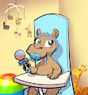 Baby Camels Season 1 小骆驼第 1 季小骆驼第 1 季 NFT - 常见问题 (FAQ) ▶ 什么是小骆驼第1季？ Baby Camels Season 1 是一个 NFT（非同质代币）系列。存储在区块链上的数字收藏品系列。 ▶ 有多少
Baby CyberGorillas 一个由 3333 名 CyberGorillas 组成的部落在丛林中秘密工作，以开发强大的 JungeSerum。食用后，将生产一个 Baby CyberGorilla。我们 P2E 生态系统的一部
Baby CyberGorillas V2 一个由 3333 名 CyberGorillas 组成的部落在丛林中秘密工作，以开发强大的 JungeSerum。食用后，将生产一个 Baby CyberGorilla。我们 P2E 生态系统的一部
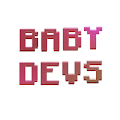 Baby Devs NFT (OFFICIAL) Baby Devs NFT 是在以太坊区块链上狂奔的 6,666 名 Baby Devs 的集合，将所有销售利润的 15% 捐赠给专注于消除儿童饥饿的儿童慈善机构 No Kid Hungry。Baby Devs NFT 致力于慈
Baby Doge Army Genesis Baby Doge Army NFT - 常见问题（FAQ） ▶ 什么是小狗狗军？ Baby Doge Army 是一个 NFT（非同质代币）系列。存储在区块链上的数字收藏品集合。 ▶ 存在多少 Baby Doge Army 代币？ 3
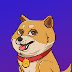 Baby Doge Army PRESALE Baby Doge Army NFT - 常见问题（FAQ） ▶ 什么是小狗狗军？ Baby Doge Army 是一个 NFT（非同质代币）系列。存储在区块链上的数字收藏品集合。 ▶ 存在多少 Baby Doge Army 代币？ 3
Baby Doodle Punks Official Baby Doodle Punks - 围绕以太坊区块链梦想的 5,555 个 Baby Doodle Punks 的集合。Baby Doodle Punks 官方 NFT - 问题常见 (FAQ) ▶ 什么是婴儿派对朋克官方？ Baby Doodle Punks Official 是一个 NFT（非同质代币）系
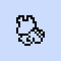 Baby Dragoons Baby Dragoons 是 1000 名 Dragoons 的集合，专注于社区和实用程序Baby Dragoons NFT - 常见问题（FAQ） ▶ 什么是小龙骑兵？ Baby Dragoons 是一个 NFT（不可替代代币）系列。存储在区块链
Baby Duck Incubator Baby Duck Pond NFT - 常见问题（FAQ） ▶ 什么是小鸭池？ Baby Duck Pond 是一个 NFT（Non-fungible token）集合存储。在区块链上的数字收藏品集合。 ▶
Baby Duck Pond BDP 是 3146 个独特的 Baby Duck NFT 的集合——生活在以太坊区块链上的独特数字收藏品🐣Baby Duck Pond NFT - 常见问题（FAQ） ▶ 什么是小鸭池？ Baby Duck Pond 是一个 NFT（N
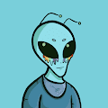 Baby Ethalien Baby Ethaliens 是 Ethaliens.Ethalien 的后代Baby Ethalien NFT - 常见问题（FAQ） ▶ 什么是婴儿Ethalien？ Baby Ethalien 是一个 NFT（不可替代代币）系列。存储在区块链上的数字收藏品